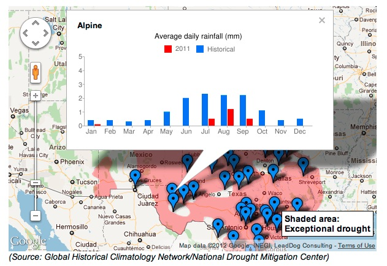
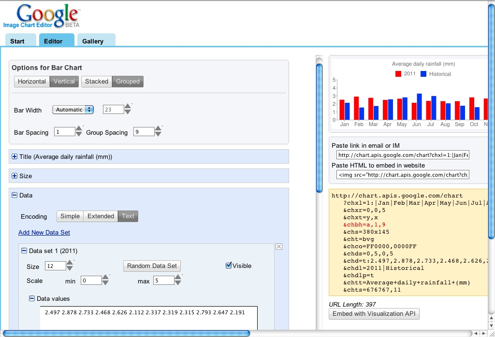

Explore and reformat data
- Extract data with a filter
- Aggregate data, then download it
- Merge data together
- Extract a subset by merging
-
...and don't forget:
Google Refine
(Hands-On: 2pm Friday!)




This URL will return one single chart image, with the specified data
<img src="http://chart.apis.google.com/chart? chxl=1:|Jan|Feb|Mar|Apr|May|Jun|Jul|Aug|Sep|Oct|Nov|Dec& chxr=0,0,5&chxt=y,x&chbh=a,1,9&chs=380x145&cht=bvg& chco=FF0000,0000FF&chds=0,5,0,5& chd=t:2.497,2.878,2.733,2.468,2.626,2.112,2.337,2.319,2.315,2.793,2.647,2.191 |2.113,1.524,1.714,2.55,2.789,3.26,2.96,2.052,1.748,1.564,2.019,2.432 &chdl=2011|Historical&chdlp=t&chtt=Average+daily+rainfall+(mm) &chts=676767,11" width="380" height="145" alt="Average daily rainfall (mm)" />
This template for a URL grabs data from the columns. Each row has it's own chart
<img src="http://chart.apis.google.com/chart?
chxl=1:|Jan|Feb|Mar|Apr|May|Jun|Jul|Aug|Sep|Oct|Nov|Dec
&chxr=0,0,5&chxt=y,x&chbh=a,1,9&chs=380x145&cht=bvg
&chco=FF0000,0000FF&chds=0,5,0,5
&chd=t:{Jan 2011},{Feb 2011},{Mar 2011},{Apr 2011},{May 2011},{Jun 2011},{Jul 2011},{Aug 2011},{Sep 2011},0,0,0
|{January},{February},{March},{April},{May},{June},{July},{August},{September},{October},{November},{December}
&chdl=2011|Historical&chdlp=t&chtt=Average+daily+rainfall+(mm)
&chts=676767,11" width="380" height="145" />


Available to users browsing your story with one click. No download or software needed.
Document the data with attribution and descriptions.
Make it public, to show up in search.
And it's immediately API enabled.
For example, here's the SuperPAC data.
We look forward to seeing what YOU do with it next!
Tip Sheet and Slides:
http://goo.gl/Wkm0f